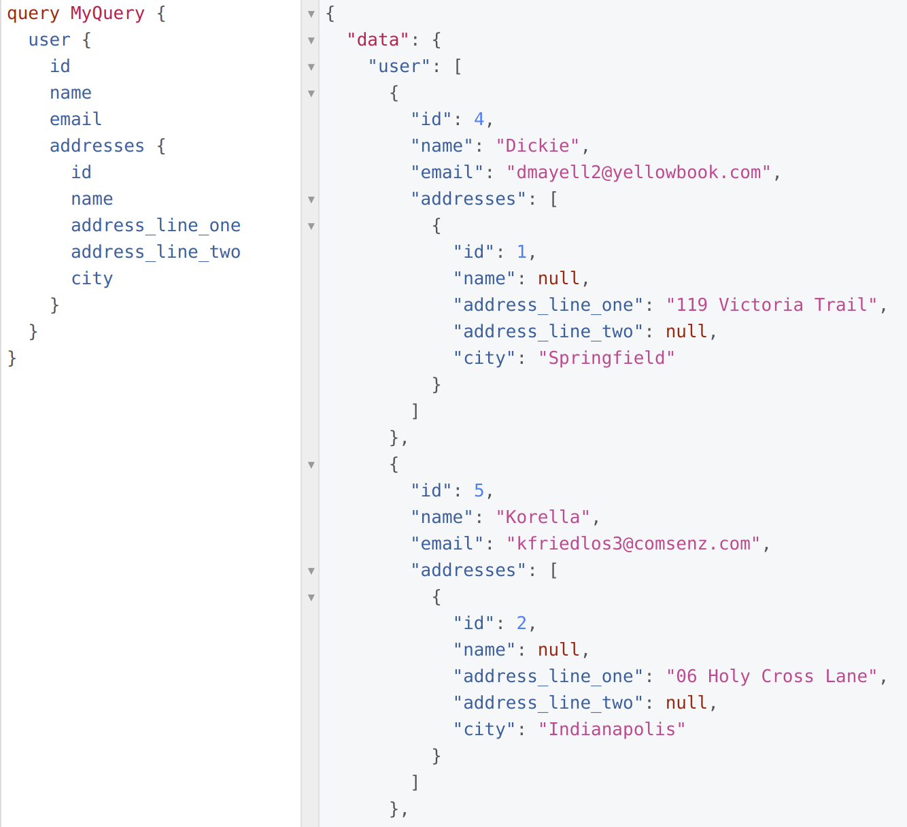

GraphQL Security
Something Old, Something New
Who
David A. Ventimiglia
"I'm a physicist, data scientist, data engineer, and software engineer, and I work for Hasura, a software technology company that provides developer-focused tooling products. I am not, however, a cybersecurity expert nor a certified financial planner. Always consult professionals for security and financial advice."
What
GraphQL API
- Query Language
- Schema
- Types
- Fields
- Types
- Types relate to Types
- Sound familiar?

GraphQL Security: In
- Principles
- Opinions
- Hasura Demo
- Summary
GraphQL Security: Out
Cybersecurity- See: Certified Experts
REST Security- See: OWASP
Comprehensive Tooling Demo- See: References
Principles
Life is about trade-offs
- Focus, engage, act.
- Conduct a frank self-assessment.
- Avoid Cargo Cults.
"There Is No Such Thing As Absolute Security."
"Security = Risk Management."

Know Your Enemy
- Disclosure (Confidentiality)
- Destruction (Integrity)
- Denial (Availability)
"The Three Security Goals Are Confidentiality, Integrity, and Availability."
Bottom Up
- Build authorization into the data model.
- Apply redundant measures at every level (within reason).
- Avoid identity erasure.
"Defense in Depth as Strategy"
Keep It Simple [Stupid] (KISS)
- Adopt a small set of principles.
- Apply them ruthlessly and redundantly.
- Repeat, repeat, repeat.
"Complexity Is the Enemy of Security."
Least Privilege
- The most secure API is the one that does nothing at all.
- Never trust anyone (within reason).
- Opt in. Don't Opt out.
"When Left on Their Own, People Tend to Make the Worst Security Decisions."
GraphQL Security Orthodoxy
Disable Console Access
- GraphQL servers often host an "admin console".
- Disable it in production.
Disable Schema Introspection
- Introspection is in the spec and in most (all?) servers.
- Disable it in production.
Disable Query Suggestions
- Some GraphQL servers try to be overly helpful.
- Disable it in production.
Impose Limits
- Traditional rate limits are a start but are not enough.
- Limit rate.
- Limit time.
- Limit depth.
- Limit nodes.
- Limit complexity.
Whitelist Operations
- Bless a fixed set of allowed queries.
- Be careful in general.
- Be careful with Automatic Persisted Queries (APQ) in particular.
GraphQL Security Heterodoxy
Don't Confuse Public vs Private.
- If you don't need to offer a public API, then don't provide one.
- If you're not providing a public API, then don't act like you are.
Don't Disable Console Access
- If you applied the Bottom-Up and Least Privilege principles, then the console can't do anything unauthorized anyway.
Don't Disable Schema Introspection and Query Suggestions
- The public needs to know how to use your public API.
- The public shouldn't have access to your private API.
- The information will get out anyway.
Don't Use GraphQL Security
- Or at least, don't rely on GraphQL security.
- Work diligently from the bottom up, and you (almost) won't need it.
Don't Use GraphQL
- For private APIs, that is.
- Use Allow Lists.
- And if you're using Allow Lists, turn them into REST endpoints or RPCs.
- GraphQL is for people, not for machines.
Hasura Demo
Summary
- Cybersecurity is a vast topic.
- Take it seriously and consult with experts.
- Tame the vastness with a principled approach.
- Do the easy things for GraphQL, but only because they're easy.
- Focus, engage, and manage trade-offs.
References
- Information Security: Principles and Practices, 2nd Edition by Mark S. Merkow and Jim Breithaupt
- GraphQL Specification
References
| Sofa | REST endpoints |
| Mesh | Whitelisting |
| Shield | Authorization |
| graphql-cost-analysis | Limit complexity |
| Hasura | Everything (except query complexity) |
Thank you!